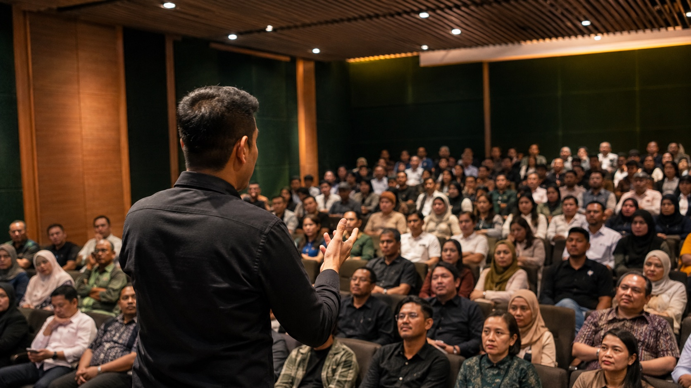
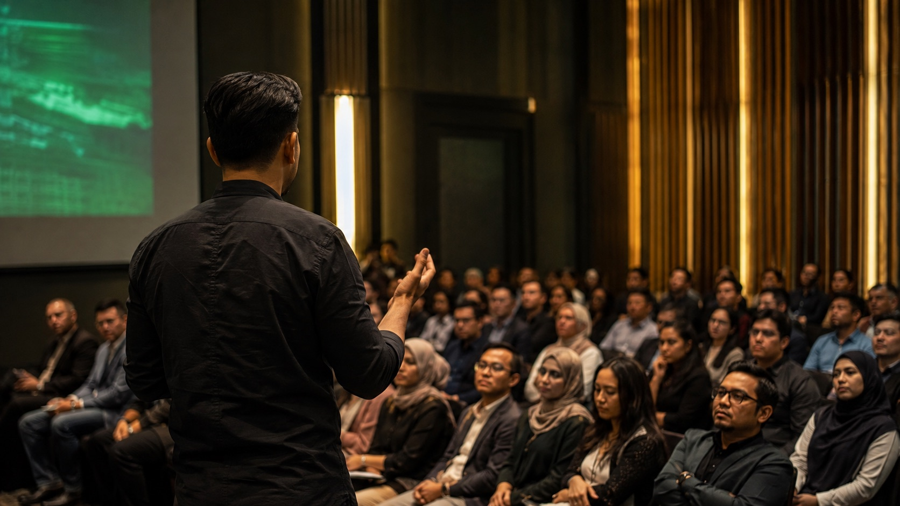

People gather when value is consistent.

Story · Five chapters · One pattern
FIVE CHAPTERS.
One pattern.
Every chapter taught me the same lesson: learn a system, test it in the real world, translate it for people, then turn it into something a room can actually use. That pattern took me from a childhood machine to classrooms, communities, brands, and now AI.
Systems → People → Impact → Repeat
Chapter 01
1988
Press a key. The machine answers.
The first shock was not speed. It was response. A machine could listen to input and answer with output. That feeling never left me. It trained the instinct that every interface hides a system, every system can be learned, and every learned system can be rebuilt for people.
Curiosity creates direction.
READY.> LOAD "CURIOSITY"> RUN
The first interface was a machine that answered back.
1988 · home computer study · archival visual treatment
CONNECTING...dial-up / 56kPAGE: INDEX
The computer becomes a printing press.
1996 · web-era study · archival visual treatment
Chapter 02
1996
The computer becomes a printing press.
In the dial-up years I was not just consuming the web. I was entering it — learning structure, pages, logic, publishing, email culture and early online behaviour. Code taught me precision. The internet taught me scale.
From users to creators.
Chapter 03
2004
Success has a temperature.
E-commerce, online payments, customer trust, payroll, operations and accountability taught me that business is not theory. It is pressure, timing, responsibility and consequence. Useful systems must survive all four.
Ideas meet reality.
PAYMENT RECEIVEDORDER / 2004BUILD · SERVE · LEARN · REPEAT
The work became accountable to people and pressure.
2004 · business systems study · archival visual treatment
Chapter 04
From code to crowds
to a plane in the sky.
The more I built, the more I was asked to explain, teach and align. The lesson was not scale for its own sake. It was consistency: value that people could feel in communities, brands and rooms.
Brands · public-facing consistencyRECEIPT
Rooms · teach and alignLIVE

Communities · value gathersLIVE
Public-facing work makes consistency visible.
The work keeps asking to be explained.
A more human tomorrowNOW
Chapter 05
NOW
The terminal learned to talk. I teach people to answer wisely.
AI did not replace my journey. It connected it. Everything before this — systems, code, commerce, communities, rooms, pressure, judgment — became preparation. Today I teach people how to work with AI in ways that are practical, grounded and worth trusting.
A more human tomorrow.
The man behind the map
THE MAN
behind the map.
A few things that still guide me.
“Integrity is transferred, not instructed.”
People trust what you repeatedly demonstrate, not what you repeatedly claim.
“What remains after public achievement?”
The part that matters most is usually the part that still helps people when the spotlight is gone.
Make the map useful to someone else.
The work is only complete when the room can carry it forward without me.
Same journey. More people. A brighter tomorrow.
AI DID NOT BEGIN
MY JOURNEY.
It gave my journey a multiplier.
A quieter life. A louder purpose.LOOK OUT